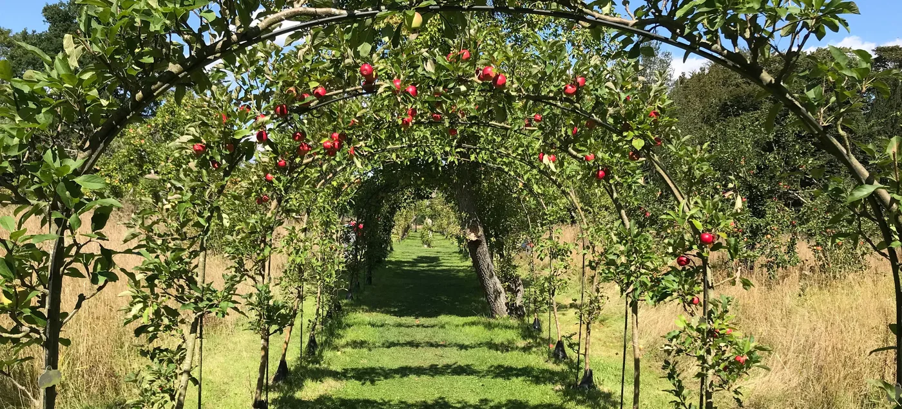

Photograph: BBC
The dataset is 120 orchards: region, variety, whether organic, age of the trees, rainfall, number of trees, and yield in kilograms per tree. Download the file, open Stata, and work down the page. Each station gives the commands to type into a do-file and the output Stata should return for this dataset, so you can check your own screen against the page. The last station checks whether you read the regression correctly.
Nothing here is stored. Answers stay in your browser.
Save the file somewhere you can find. In Stata, File, Import, Text data (delimited), choose the file and accept the defaults. Stata writes the equivalent command in the Results window. Copy that line into a new do-file so the import can be repeated.
* Week 7. Orchards. Change the path to where you saved the file.
clear all
import delimited "orchards.csv", clear
describeTwo variables are strings, marked str. Stata can count them but not average them.
Variable names are for typing; labels are for reading. Rename the two that are awkward, then label every variable so that tables and graphs explain themselves.
rename rain_mm rain rename yield_kg yield label variable rain "Annual rainfall, mm" label variable yield "Yield, kg per tree" label variable age "Age of trees, years" label variable organic "Organic certified (1 = yes)" label variable trees "Number of trees" describe rain yield age organic
Make a new variable with generate, summarise the numeric ones, then tabulate the categorical ones, alone and against each other.
generate rain_cm = rain / 10 generate total_kg = yield * trees summarize tabulate variety tabulate region organic
scatter yield rain histogram yield, bin(15)
Type help regress first and read the Quick start. Then fit the model with robust standard errors.
help regress regress yield rain age organic, robust
Four checks the page can mark, then one it cannot.